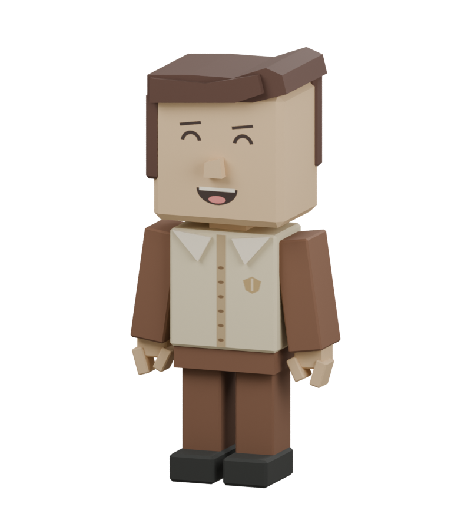
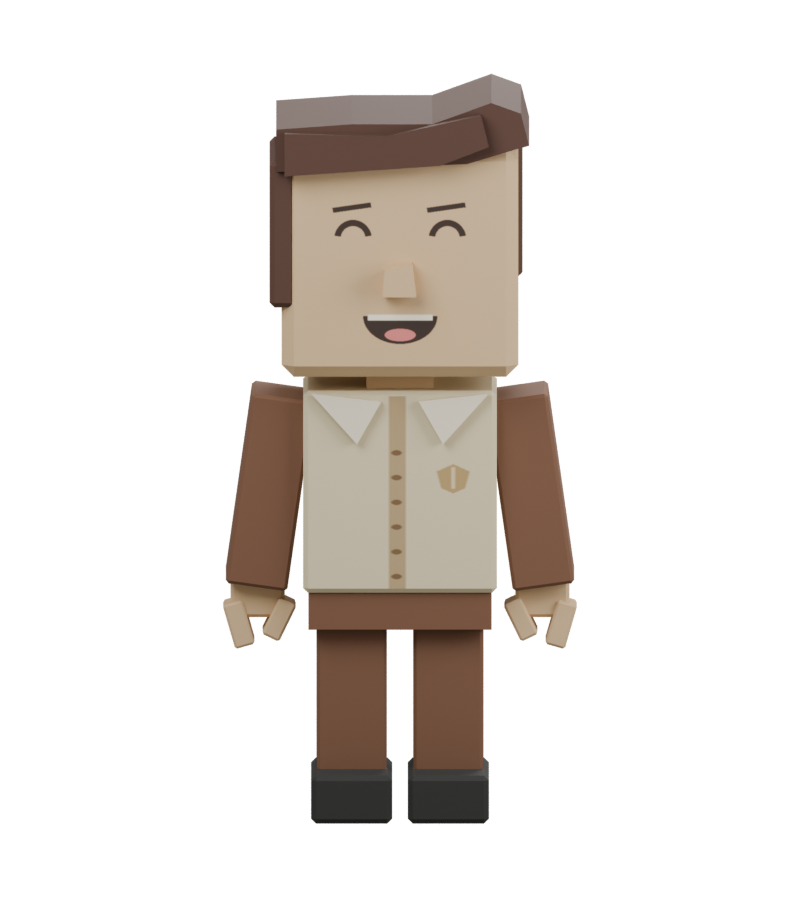
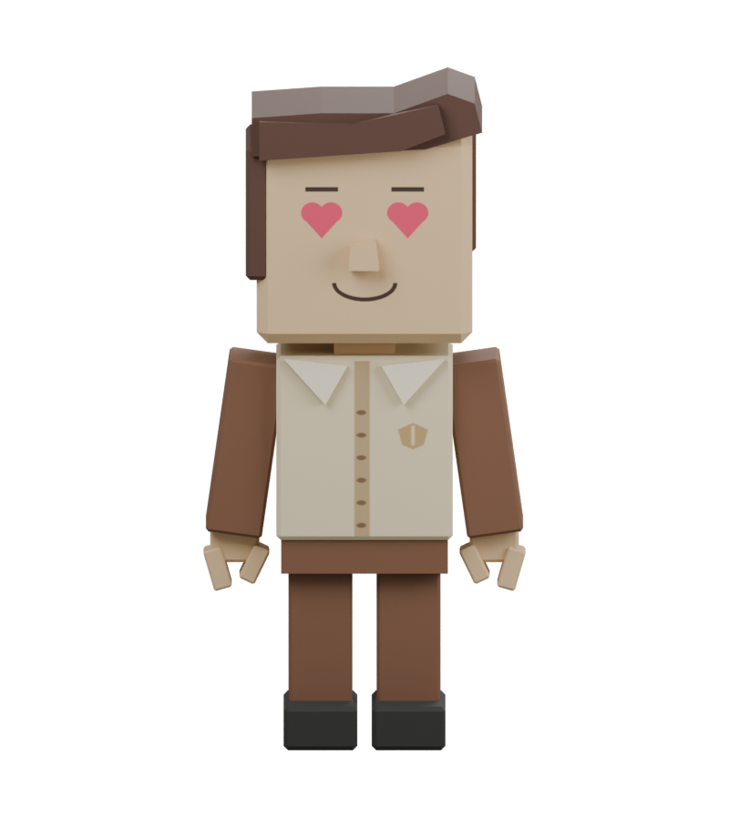
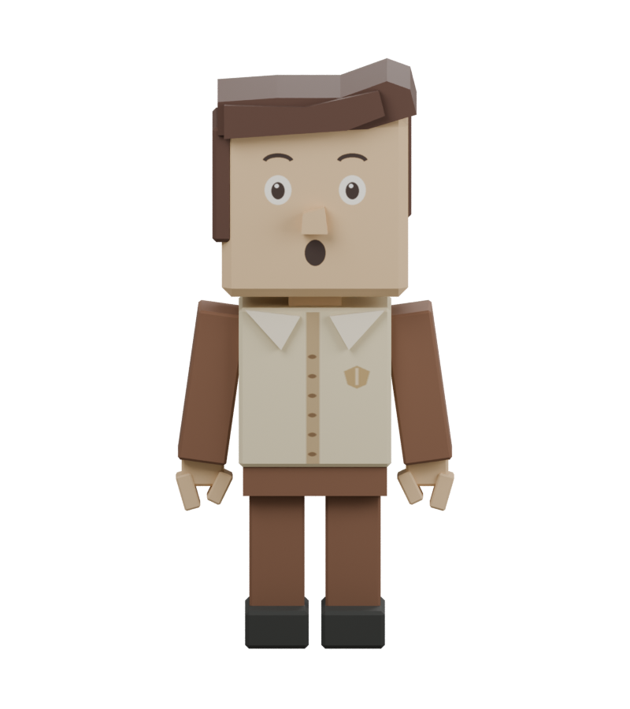

Sorridente
Vista frontal

Estudo independente · Três expressões · Uma mesma geometria




Arquivos: GLB, FBX, OBJ/MTL, Blender, textura, configuração e previews. Modelos estáticos sem esqueleto. Abra o GLB no 3DSVG para girar e capturar outros ângulos.